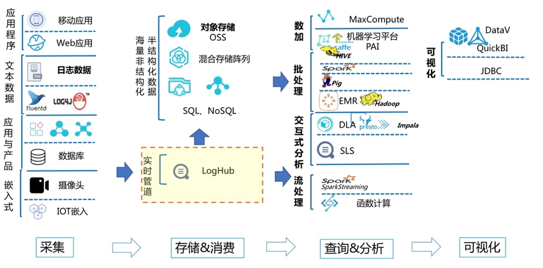
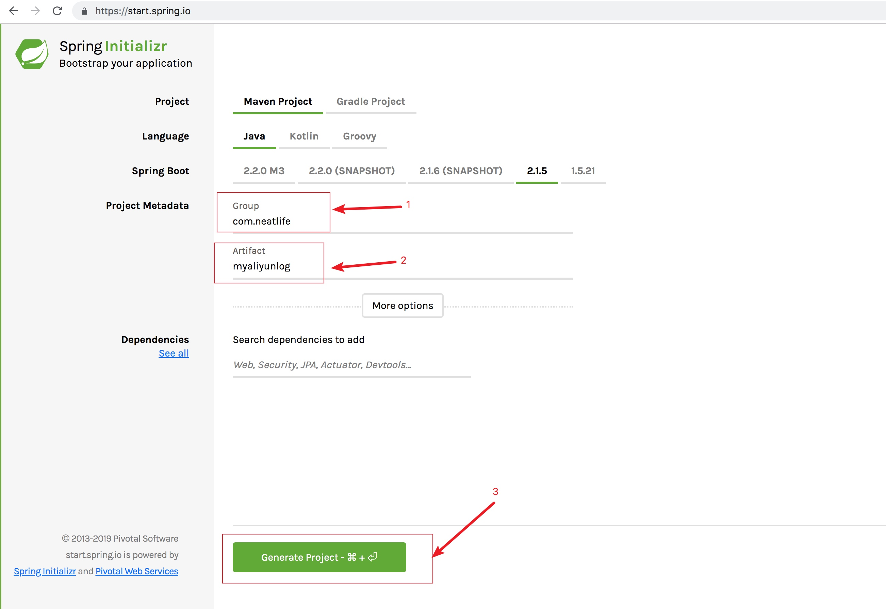
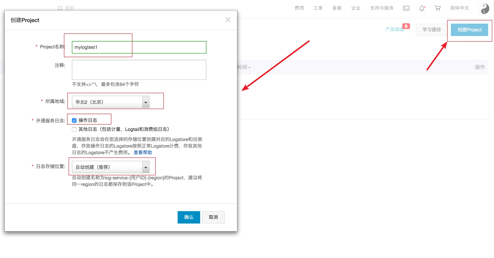
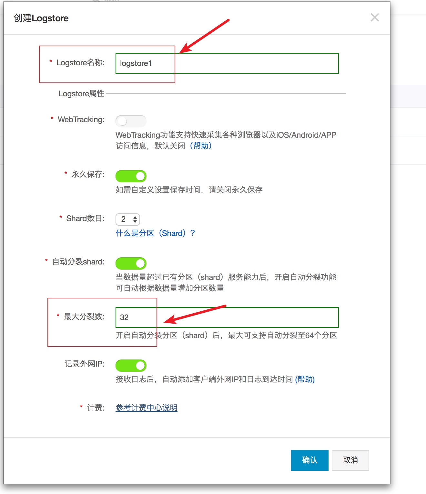
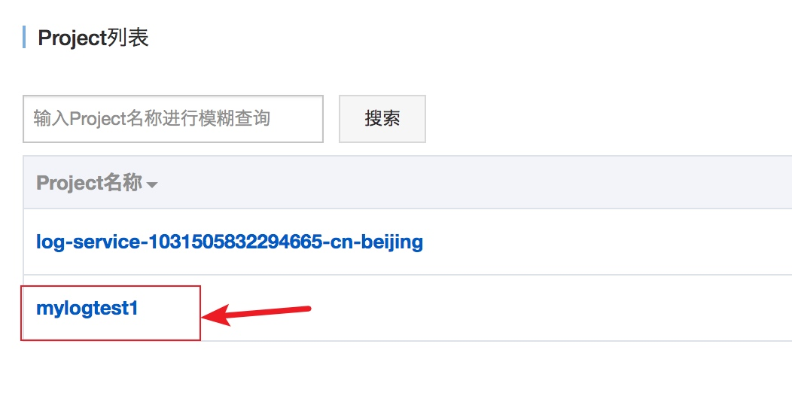
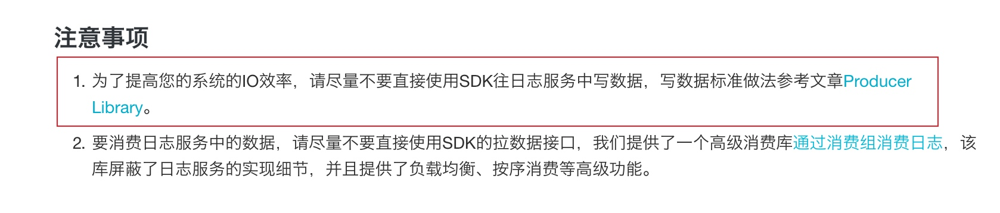
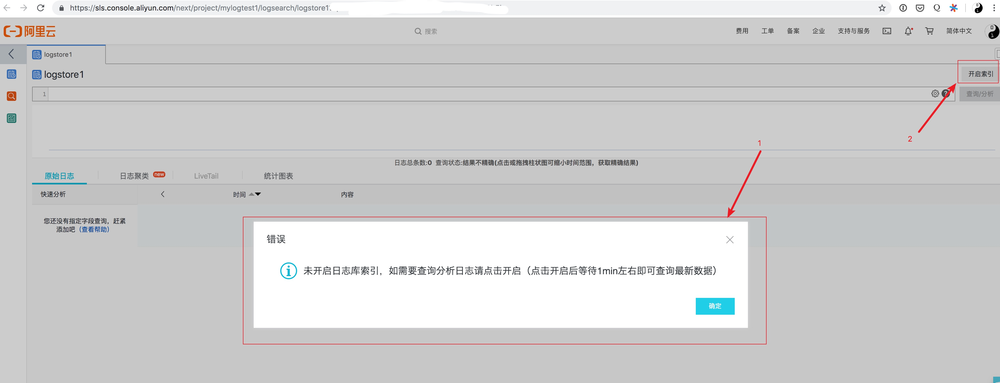
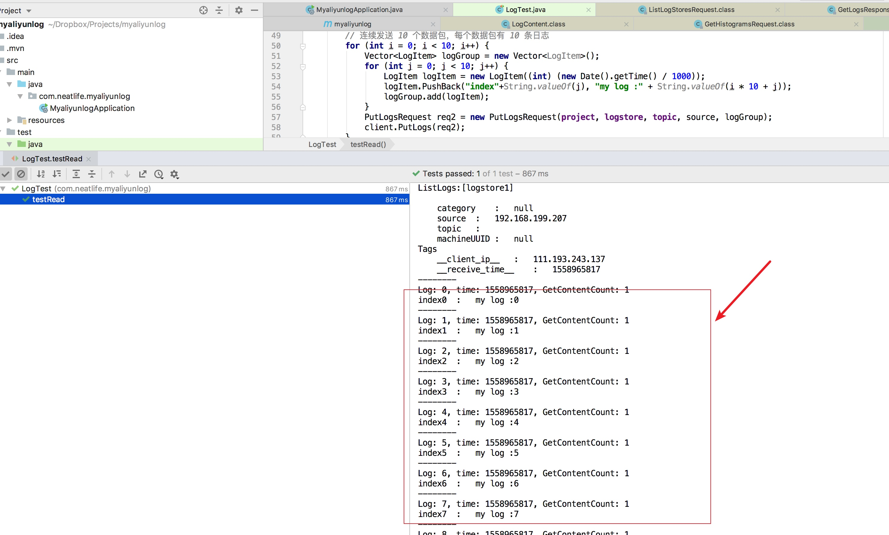
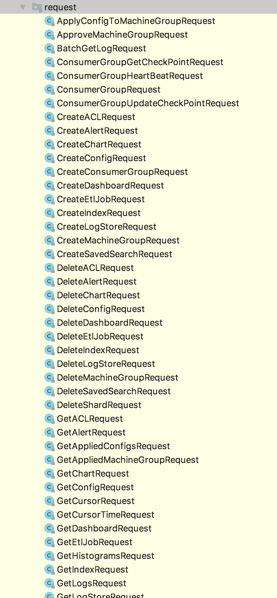

虽然可以自行搭建elk等日志系统，但是日志系统特别耗费系统资源，相对于阿里云提供日志服务，自行搭建的机器成本和运维成本较高，一般可以直接选择使用阿里云的日志服务
先来看一张阿里云日志服务的架构图

从上面这张图可以看到这个阿里云的日志服务不仅支持多个数据源，同时在日志服务的基础上衍生出不少数据二次加工的功能，比如MacCompute、Spark Streaming等
创建案例项目
可以在https://start.spring.io/创建测试项目

然后在pom.xml文件中引入日志客户端
<dependency>
<groupId>com.google.protobuf</groupId>
<artifactId>protobuf-java</artifactId>
<version>2.5.0</version>
</dependency>
<dependency>
<groupId>com.aliyun.openservices</groupId>
<artifactId>aliyun-log</artifactId>
<version>0.6.7</version>
<exclusions>
<exclusion>
<groupId>com.google.protobuf</groupId>
<artifactId>protobuf-java</artifactId>
</exclusion>
</exclusions>
</dependency>
在阿里云上注册日志项目
在：https://sls.console.aliyun.com 创建项目

然后创建logstore，Logstore用于日志数据存储

因为是案例项目，为了避免被收费，最大Shard数可以设置成32以内，32以内是免费的
查看项目列表

可以看到这个mylogtest1项目创建成功了
然后记录下阿里云的AccessKey、SecretKey、日志项目名称，日志项目下的logstore名称
创建日志客户端对象
核心代码如下
private String project = "mylogtest1"; // 上面步骤创建的项目名称
private String logstore = "logstore1"; // 上面步骤创建的日志库名称
private String topic = "";
private Client getClient() {
String endpoint = "cn-beijing.log.aliyuncs.com"; // 选择与上面步骤创建 project 所属区域匹配的
// Endpoint
String accessKeyId = "阿里云上获取的accessKeyId"; // 使用您的阿里云访问密钥 AccessKeyId
String accessKeySecret = "阿里云上获取accessKeySecret"; // 使用您的阿里云访问密钥
// AccessKeySecret
// 构建一个客户端实例
return new Client(endpoint, accessKeyId, accessKeySecret);
}
endpoint在每个阿里云可用区的代码都不相同，完整列表参考：https://help.aliyun.com/document_detail/29008.html
使用sdk发送日志
核心代码如下
Client client = getClient();
// 列出当前 project 下的所有日志库名称
int offset = 0;
int size = 100;
String logStoreSubName = "";
ListLogStoresRequest req1 = new ListLogStoresRequest(project, offset, size, logStoreSubName);
ArrayList<String> logStores = client.ListLogStores(req1).GetLogStores();
System.out.println("ListLogs:" + logStores.toString() + "\n");
// 写入日志
String source = "";
// 连续发送 10 个数据包，每个数据包有 10 条日志
for (int i = 0; i < 10; i++) {
Vector<LogItem> logGroup = new Vector<LogItem>();
for (int j = 0; j < 10; j++) {
LogItem logItem = new LogItem((int) (new Date().getTime() / 1000));
logItem.PushBack("index"+String.valueOf(j), "my log :" + String.valueOf(i * 10 + j));
logGroup.add(logItem);
}
PutLogsRequest req2 = new PutLogsRequest(project, logstore, topic, source, logGroup);
client.PutLogs(req2);
}
推荐使用独立的线程组发送日志，参考：https://github.com/aliyun/aliyun-log-java-producer
https://help.aliyun.com/document_detail/29068.html

然而php等客户端就没有官方提供的线程组支持了
使用sdk拉取日志
拉取日志需要先在阿里云后台开启索引功能

需要等待1分钟左右的初始化
核心代码如下：
Client client = getClient();
// 列出当前 project 下的所有日志库名称
int offset = 0;
int size = 100;
String logStoreSubName = "";
ListLogStoresRequest req1 = new ListLogStoresRequest(project, offset, size, logStoreSubName);
ArrayList<String> logStores = client.ListLogStores(req1).GetLogStores();
System.out.println("ListLogs:" + logStores.toString() + "\n");
// 把 0 号 shard 中，最近 1 分钟写入的数据都读取出来。
int shard_id = 0;
long curTimeInSec = System.currentTimeMillis() / 1000;
GetCursorResponse cursorRes = client.GetCursor(project, logstore, shard_id, curTimeInSec - 60);
String beginCursor = cursorRes.GetCursor();
cursorRes = client.GetCursor(project, logstore, shard_id, Consts.CursorMode.END);
String endCursor = cursorRes.GetCursor();
String curCursor = beginCursor;
while (!curCursor.equals(endCursor)) {
int loggroup_count = 2; // 每次读取两个 loggroup
BatchGetLogResponse logDataRes = client.BatchGetLog(project, logstore, shard_id, loggroup_count, curCursor,
endCursor);
// 读取LogGroup的List
List<LogGroupData> logGroups = logDataRes.GetLogGroups();
for (LogGroupData logGroup : logGroups) {
FastLogGroup flg = logGroup.GetFastLogGroup();
System.out.println(String.format("\tcategory\t:\t%s\n\tsource\t:\t%s\n\ttopic\t:\t%s\n\tmachineUUID\t:\t%s",
flg.getCategory(), flg.getSource(), flg.getTopic(), flg.getMachineUUID()));
System.out.println("Tags");
for (int tagIdx = 0; tagIdx < flg.getLogTagsCount(); ++tagIdx) {
FastLogTag logtag = flg.getLogTags(tagIdx);
System.out.println(String.format("\t%s\t:\t%s", logtag.getKey(), logtag.getValue()));
}
for (int lIdx = 0; lIdx < flg.getLogsCount(); ++lIdx) {
FastLog log = flg.getLogs(lIdx);
System.out.println("--------\nLog: " + lIdx + ", time: " + log.getTime() + ", GetContentCount: " + log.getContentsCount());
for (int cIdx = 0; cIdx < log.getContentsCount(); ++cIdx) {
FastLogContent content = log.getContents(cIdx);
System.out.println(content.getKey() + "\t:\t" + content.getValue());
}
}
}
String next_cursor = logDataRes.GetNextCursor();
System.out.println("The Next cursor:" + next_cursor);
curCursor = next_cursor;
}
查看执行效果

可以看到已经成功拉取到刚刚生成的日志了
拉取日志有更高效的消费客户端，参考：https://help.aliyun.com/document_detail/28998.html
一些注意的点
一个项目下可以有多个logstore，每个logstore在逻辑上是独立的，可以使用logstore来对存放的日志进行分类
阿里云这个日志服务的api里不仅提供了基础的发送，查询日志的功能，还提供了日志服务的管控api，比如创建项目，创建日志库等功能
这个java客户端封装了77个日志相关的api，日志管理是比较全面了，参考这个包：com.aliyun.openservices.log.reques

php客户端
虽然php客户端提供了完整的功能，但是java客户端的命名更加规范，建议可以学习java客户端的设计思路，然后再使用php客户端
相比java客户端77个api封装，php客户端只提供了41个api封装，参考：https://github.com/aliyun/aliyun-log-php-sdk/tree/master/Aliyun/Log/Models/Request
因为这个日志系统api都是走http协议发送到阿里云，比较耗费网络资源，所以并不建议直接在php项目中将日志发到阿里云，可以采用redis作为日志临时存储，然后单独开线程将这个日志发送到阿里云日志中心
参考链接
- 日志服务控制台：https://sls.console.aliyun.com/
- JAVA SDK: https://help.aliyun.com/document_detail/29068.html
- PHP SDK: https://help.aliyun.com/document_detail/29074.html
- 阿里云 10 PB+／天的日志系统设计和实现
- 日志服务学习路径
- 计费：https://www.aliyun.com/price/product?#/sls/detail
- api文档参考：https://help.aliyun.com/document_detail/29007.html
- 收集ThinkPHP日志：https://help.aliyun.com/document_detail/31779.html
- Logtail安装：https://help.aliyun.com/document_detail/28982.html
- 阿里云日志查询语法：https://help.aliyun.com/document_detail/29060.html